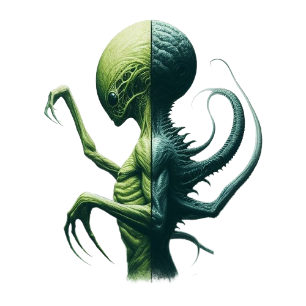
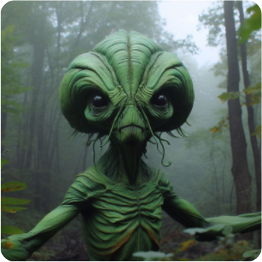

Civilization
Name: Gentile
Enviroment
The creature is intrinsically adapted to the unique environment of the planet Aslan, which is characterized by a dense atmosphere, with an exceptional abundance of oxygen compared to Earth. This oxygen density allows the creature to breathe deeply, but it also results in a notable difficulty in staying underwater, limiting its underwater time to an average of mere 30 seconds. Aslan's environment is dominated by lush flora and fauna, inspired by the Avatar universe, providing an abundant source of food and survival challenges for the creature. As a result, the creature is omnivorous, but its food preferences vary according to season periods: during the winter, they become herbivores, focusing on oxygenated fruits (fruits rich in oxygen), while the rest of the year, they adopt a carnivorous diet.
Physical
The creature's appearance vaguely resembles that of a human from Earth, although with some notable distinctions. An average adult of 30 years old has an impressive height of 7,5 feet and is built with exceptionally long arms, extending beyond the knees. Its skin is a characteristic dark green and its locomotion is on two sturdy legs. When running, it takes advantage of its arms to gain momentum, reaching a speed that exceeds that of a leopard. With an average weight of 120 kg on the Earth scale, the creature has a notably large head, which serves to store the oxygen needed to sustain its organism and its vigorous physical activities. Due to its extreme need for oxygen, the creature is not enthusiastic about aquatic environments and, on average, can only stay underwater for 30 seconds. It has no swimming skills.
Special Skills
Communication between creatures is rudimentary, characterized by a objective and primitive language. Social hierarchy is determined by age, with the oldest member of the family exercising total and unquestionable authority, regardless of gender. Those considered incompetent are ritually sacrificed by the family to make way for a new leader, a widely accepted cultural practice in Aslan society. This creature is the only intelligent species on the planet, occupying the top of the food chain and physically dominating the entire Aslan ecosystem.
Social Behavior
Creatures live in family groups, forming communities through mating ceremonies. The oldest member of the family assumes the role of dominator and absolute leader of the entire family, determined by the color of their skin, the darker green the older they are considered. There is no distinction of social hierarchy between the sexes.
Culture and Society
The culture of the creatures of Aslan is rich and deeply spiritual. They worship eyes and believe that each individual possesses a divine part within their eyes. Eye rituals are performed on various important occasions, and the stars in the night sky are considered the gazes of family leaders who have already passed away. Their language is primitive and objective, expressing few emotions. In terms of clothing, they use forest leaves to cover their private parts and wrists. Tradition is highly family-centered, with little cultural variation beyond family ties, and it is rare for creatures to stray from this cultural core.
 Return
Return